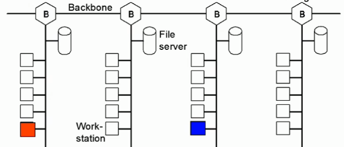

The Classic Ethernet is a typical example of a broadcast network.
Classic Ethernet is a generic term for the family of 10 Mbit/s Ethernet standards, which is the first generation of Ethernet standards - 10 Mbit/s is pretty slow! Classic Ethernet is pretty old now, and we have much better Ethernet now.
Usually a bus topology - there's one shared coaxial cable to which all hosts are attached. We call it 'The Ether' (hence the name Ethernet)
For any given LAN, if this condition is True, it means that the network can be used as an Ethernet.
If you can't remember what TT and RTT are, do not fear. It's the same stuff that I introduced back in Flow Control
Figure 4.8a
Soooo why does the TT have to be >= RTT ?
Also, you might notice in Figure 4.8a it says that the 'Minimum frame length = 64 bytes'. Why is this?
a) To ensure that collisions can be detected during transmission.
b)
// convert length of frame into bits
len(frame) = 64 bytes
= 512 bits
// convert TR into bits
TR = 10 Mbps
= 10,000,000 Bps
// So these are the values we will use
len(frame) = 512
TR = 10,000,000
RTD = 2000
PS = 2*108
// now everything is in bits, we are ready to calculate TT and RTT...
TT = 512 / 10,000,000
= 0.0000512
RTT = 2000 / 2*108
= 0.00001
TT >= RTT
∴ this can be used as an Ethernet network, because the Transmission Time is >= the Round Trip Time.
The length of the cable (1000 meters) is a critical number. By that I mean depending on the length of the cable things can change dramatically.
Imagine the cable length was 5000 meters. Frames of length 64 bytes are no longer long enough to detect collisions.
Intuitively, you should just increase the length of the frame. Right?
NO - we should never change the len(frame) under any circumstance. When building Ethernet networks, it is best practice to keep the len(frame) to 64 bytes.
Instead, we should break down the Ethernet network into sub-networks. We connect the sub-networks using Ethernet bridges.
Bridges are the answers to many things in life.
Too build a larger Ethernet network, we must use Ethernet bridges.
Bridges read and learn MAC addresses of the devices in the network.
Here's an example of an Ethernet network that uses bridges to connect 4 local segments:
Figure 4.8b
Suppose the orange device wants to talk to the blue device...
In summary... if any device sends a frame, it is received by all devices and the bridge in the local segment we are currently in.
How is this all possible? Because bridges know their shit.
Ethernet bridges learn and relearn MAC addresses using a 'Forwading Table'. We call this ability Backward Learning.
Forwarding tables have 1 entry per network address.
Forwading tables keeps track of two things:
Visit this webpage to see a great animation of how bridges work.
At the top of this page I said that we don't use Classic Ethernet anymore.
We use 'Switched Ethernet' more often nowadays.
Switched Ethernet uses full-duplex communication.
There are many advantage to using a Switched Ethernet instead of a Classic Ethernet:
The reliability of Switched Ethernet is good because we use Hubs:
Unfortunately there are some disadvantages to hubs: